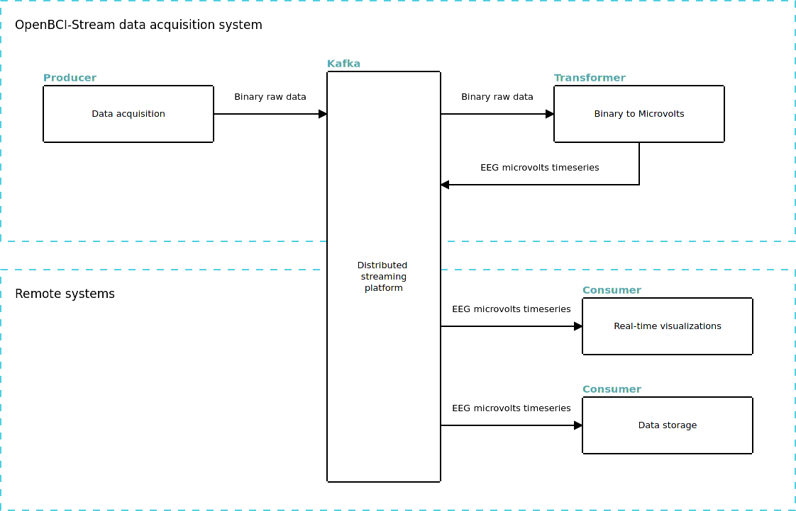

Data Acquisition¶
Note
Before continuing with the data acquisition, make sure to satisfy these two conditions.
OpenBCI firmware version >= V3.0.0 is required.
Apache Kafka must be running and correctly configured, otherwise is impossible to access to EEG data, check the guide for configure Kafka.
Distributed streaming architecture¶
Here is where Kafka meets OpenBCI, first at all, a few definitions:
Produser: Kafka node thats only generate data.
Coansumer: Kafka node thats only read data.
Transformer: Kafka node thats read data and push new kind of data in the stream.
OpenBCI-Stream creates a producer for stream binary data, and a transformer to convert this binary data into EEG deserialized (in microseconds), these two elements are placed in the same node that the Cyton board is connected to. All additional consumers can be executed from any system and access the data through Kafka.

Talking strictly, in a distributed system we have not distinctions like, server and client, or local and remote, all nodes are equals. In this way, OpenBCI-Stream is cappable to connect and start acquisitión no matters in wich node has being executed and which node has the OpenBCI board attached. When this nodes are differents, we need an addres to find OpenBCI, we will call this addres host and corresponds to the computer IP address in the local network.
Initializing the transformer¶
If you are familiarized with OpenBCI, you will notice that best option is collect the data in raw format, is faster, if we do this we must transform this data into EEG microvolts data. Using the Kafka paradigm, this means to create a tranformer, a single script thats will be reading raw data from the stream and pusshing deserialized data back. In Kafka this two channels are called Topics, There is multiple ways to execute this mandatory transformer.
From command line¶
OpenBCI-Stream integrate a high-level transformer for this purpose, this script is also a daemon, if the package was installed correctly in the system, there is terminal program called stream_eeg, this program will start this transformer.
[ ]:
$ stream_eeg
From systemd¶
If your system are systemd based, you will be interested in execute stream_eeg systemd, in this way a system daemon will be installed and the transformer could be initialized with:
[ ]:
$ stream_eeg systemd
$ systemctl start stream_eeg
From source code¶
For advanced users that really knows what are they doing, is to run the transformer directly from the source code.
From script¶
[ ]:
from openbci_stream.daemons.stream_eeg import BinaryToEEG
tranformer = BinaryToEEG()
tranformer.consume()
Note
There is no way to check if this transformer are running, if you are getting empty data on acquisition, that could means tha there is a problem with this.
This transformer should be running in background all time you are working with OpenBCI.
This transformer should be run only on one node, anyone, but never more than one.
Data acquisition¶
High-level Cyton class¶
The Cyton class is the main method to handle the board connection, support multiple modes (Serial, WiFi), synchronous, and asynchronous acquisition.
[ ]:
from openbci_stream.acquisition import Cyton
import time
openbci = Cyton('wifi', '192.168.1.78')
openbci.command(cons.DEFAULT_CHANNELS_SETTINGS)
# openbci = Cyton('serial', 'COM0')
# stream 15 seconds
openbci.start_stream()
time.sleep(15) # asynchronous call
openbci.stop_stream()
The above initialize the data streaming, but not capture them, capture_stream argument must be configured for access to EEG data.
[ ]:
from openbci_stream.acquisition import Cyton
openbci = Cyton('serial', capture_stream=True)
openbci.command(cons.DEFAULT_CHANNELS_SETTINGS)
openbci.stream(15) # stream 15 second
print(openbci.eeg_time_series)
In the first snippet, the stream was activated asynchronously, which means that any other task can be implemented between start_stream() and stop_stream(), in the second snippet, the code execution will wait the specified time.
Note
Datetimes¶
The Cyton class has the timestamp_time_series object that contains a unix timestamp register, this array can be passed to datetime.fromtimestamp to get a datetime object.
[ ]:
from datetime import datetime
datetimes = [datetime.fromtimestamp(_) for _ in openbci.timestamp_time_series]
print("Raw timestamps: ", openbci.timestamp_time_series[:2])
print("Datetimes: ", datetimes[:2], end='\n\n')
delta = datetimes[-1] - datetimes[0]
print(f"Duration: { delta.seconds} s")
print(f"Started on : {datetimes[0].strftime('%Y-%m-%d %H:%M')}")
Controlled execution with OpenBCIConsumer() class¶
This acquisition method allows you to connect to the data stream and get the data in real-time, with the difference that OpenBCIConsumer can connect to a previously started stream and can be executed from any node.
[ ]:
from openbci_stream.acquisition import OpenBCIConsumer
with OpenBCIConsumer() as stream:
for i, message in enumerate(stream):
if message.topic == 'eeg':
print(f"{i}: received {message.value['samples']} samples")
if i == 9:
break
In the above script, there is no board configuration because the acquisition was already started, so this only connects to the stream.
Additionally, is possible to start the acquisition like in Cyton class by passing the same arguments, with the difference that capture_stream has not effect because the data will be returned anyway.
[ ]:
from openbci_stream.acquisition import OpenBCIConsumer
import time
with OpenBCIConsumer(mode='serial', endpoint='/dev/ttyUSB0', streaming_package_size=250) as (stream, openbci):
t0 = time.time()
for i, message in enumerate(stream):
if message.topic == 'eeg':
print(f"{i}:{time.time()-t0} received {message.value['samples']} samples")
t0 = time.time()
if i == 9:
break
In the above script, the controlled execution will return two objects, stream from kafka-python and an instance of Cyton called openbci. This instance can be used for send extra commands previous to iterate over the stream:
[ ]:
with OpenBCIConsumer(mode='wifi', endpoint='192.168.1.87', streaming_package_size=500) as (stream, openbci):
openbci.stop_stream() # stop
# Send commands previous to stream
openbci.command(cons.SAMPLE_RATE_2KSPS)
openbci.command(cons.DEFAULT_CHANNELS_SETTINGS)
openbci.leadoff_impedance(range(1, 9), pchan=cons.TEST_SIGNAL_NOT_APPLIED, nchan=cons.TEST_SIGNAL_APPLIED)
openbci.start_stream() # start
for message in stream:
...
Linstenign markers¶
You probably noticed the conditional line if message.topic == 'eeg':, here eeg is a topic, there is an extra topic called markers and this is one of the most convenient usages of OpenBCIConsumer: listening to markers:
[ ]:
from openbci_stream.acquisition import OpenBCIConsumer
# with OpenBCIConsumer() as stream:
with OpenBCIConsumer(mode='serial', endpoint='/dev/ttyUSB0', streaming_package_size=250) as (stream, openbci):
for message in stream:
if message.topic == 'marker':
print(message.value)
Common features¶
WiFi module¶
In the same way that Cyton('serial') and OpenBCIConsumer(mode='serial') handle the serial interface, the argument 'wifi' can be used for a WiFi module.
[ ]:
Cyton('wifi')
OpenBCIConsumer(mode='wifi')
Daisy¶
Daisy extension board is detected automatically but can be configured explicitly with the argument daisy=True:
[ ]:
Cyton('serial', daisy=True)
OpenBCIConsumer(mode='serial', daisy=True)
Montage¶
montage receives either a list or a dictionary, this feature not only registers the montage used but also turn on and off channels on the Cyton board, by default all channels are turned on.list means consecutive channels:[ ]:
Cyton('serial', daisy=True, montage=['Fp1', 'Fp2', 'F3', 'Fz', 'F4', 'T3', 'C3', 'Cz',
'C4', 'T4', 'P3', 'Pz', 'P4', 'O1', 'O2', 'Oz'])
A dictionary means specific channels:
[ ]:
Cyton('serial', daisy=True, montage={1: 'Fp1', 2: 'Fp2', 3: 'F3', 4: 'Fz', 5: 'F4'})
Note
The channels are 1-based indexing instead of 0-based like Python, this feature is in favor of commonly accepted channels naming used for EEG/EOG/EMG, where the first channel is 1 and the 0 not even exist.
Distributed acquisition¶
In case of a server-based acquisition the argument host is suitable for connect with these boards.
[ ]:
openbci = Cyton('wifi', '192.168.1.113', host='192.168.1.1', capture_stream=True)
openbci.command(cons.DEFAULT_CHANNELS_SETTINGS)
openbci.stream(15) # stream 15 second
eeg = np.array(openbci.eeg_time_series) # mandatory typecasting
In this case 192.168.1.113 is the IP of the module WiFi and 192.168.1.1 is the IP of the server.
Note
Over distributed acquisition all data returned MUST be typecasting by the user with numpy.array, otherwise will generate strange behavior.
Commands¶
[ ]:
from openbci_stream.acquisition import CytonConstants as cons
openbci.command(cons.SD_DATA_LOGGING_1HR)
openbci.command(cons.TEST_1X_SLOW)
Send a constant with the string names is possible too:
[ ]:
openbci.command('SD_DATA_LOGGING_1HR')
openbci.command('TEST_1X_SLOW')
Save data¶
There is implemented a custom data storage handler, this handler was designed especially for data streams and supports useful features like EFD exports and MNE objects generator.
[3]:
from openbci_stream.acquisition import Cyton
from openbci_stream.acquisition import CytonConstants as cons
openbci = Cyton('wifi', '192.168.4.1', capture_stream=True, streaming_package_size=250)
openbci.command(cons.DEFAULT_CHANNELS_SETTINGS)
openbci.command(cons.SAMPLE_RATE_1KSPS)
openbci.stream(10)
openbci.save('eeg_saved.h5', montage='standar_1020')
WARNING:kafka.coordinator.consumer:group_id is None: disabling auto-commit.
The data is cleared for every acquisition.
Cyton Vs OpenBCIConsumer¶
Both classes allow the board initialization, stream, and data acquisition, Cyton can be used in synchronous and asynchronous implementations, is more flexible and the recommended way to handle boards, on the other hand, OpenBCIConsumer is an implementation based in controlled execution, must be used when access immediately to the EEG data is required.
Which should I choose?¶
Most of the time the Cyton class is the best option, it supports overwriting, and can be used to start and stop de acquisition at any time without disconnect the board. OpenBCIConsumer is recommended for a real-time data consumer or for markers listening.
Distributed stream access¶
If a data stream is currently active (it can be created via Cython or OpenBCIConsumer) is possible to use OpenBCIConsumer to only access the data streamed, in this way is possible to get multiple real-time scripts for data processing.